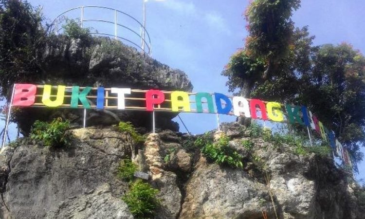

Destination
Enjoy The Trip In Pati

Juwana Water Fantasi
Juwana Water Fantasy atau dikenal dengan nama (JWF) adalah tempat wisata keluarga yang terdapat di Kabupaten Pati, JWF adalah tempat wisata keluarga dengan...
Detail

Bukit Pandang Kayen
Bukit pandang merupakan destinasi wisata terbaru yang ada di pati selatan, yang terdapat di kawasan lereng gunung Kendeng, tepatnya di desa Duren Sawit...
Detail
Hutan Pinus Pangonan
Hutan Pinus Pangonan adalah tempat wisata yang berada di Gunungsari, Kecamatan Tlogowungu, Kabupaten Pati, Jawa Tengah. Hutan...
Detail